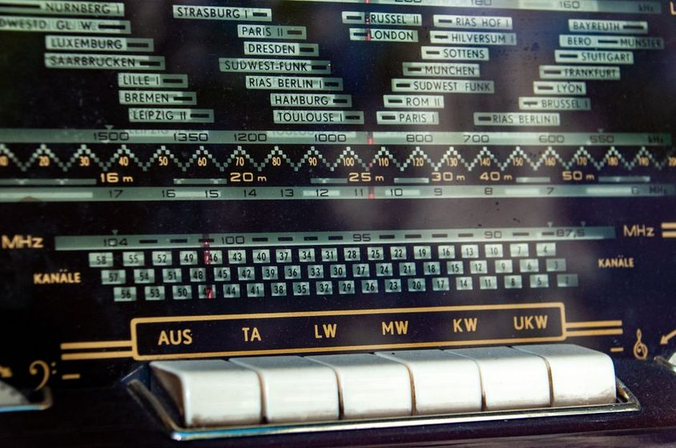

The Grayline Window, Twice a Day
Dawn and dusk share a narrow band of geometry that briefly favors distant, weak signals. A log of what showed up in that window over three weeks.

Every clear morning for three weeks, the receiver at this desk came on about forty minutes before local sunrise, and it came on again about forty minutes before local sunset. Not because either moment is special to the radio itself — a receiver has no clock of its own — but because the ionosphere overhead does something narrow and repeatable right around those two moments, and the only way to see it clearly is to sit through it more than once, with a pen nearby.
What the grayline actually is
The grayline is the band of twilight that circles the earth wherever the sun is rising on one side and setting on the other. It is not a place a signal travels through so much as a condition a signal happens to pass through on its way somewhere else. During full daylight, the lower ionosphere absorbs a good deal of energy on the mid and lower shortwave bands before it ever gets far. During full night, that absorbing layer weakens, but so does some of the ionization higher up that bends signals back toward earth. For a short stretch at dawn and dusk, the absorbing layer has thinned while the reflecting layer above it is still charged from the day just ending or the day about to start. The path opens a little wider than it does at either extreme.
Finding your own window
Look up local sunrise and sunset for your own coordinates, then park the receiver on a mid-shortwave broadcast band starting about thirty minutes before each. The window does not announce itself. Log the moment the band's character changes, the moment it peaks, and the moment it settles back to ordinary daytime or nighttime behavior — three timestamps, not one.
Three weeks, two windows a day
The routine was simple enough to keep for three weeks: dawn session, dusk session, same seat, same antenna, same notebook open to a fresh line. What was not simple was predicting how long either window would last. Some mornings the shift was obvious within ten minutes — a band that had been dead all night suddenly carrying two stations where there had been none. Other mornings it crept in so gradually that the log entry ended up reading "hard to say when this started," which is its own kind of honest data point.
Across the full three weeks, the dawn window ran anywhere from eighteen to just past forty minutes before it collapsed back to normal daytime quiet. The dusk window tended to run a little longer and a little messier, often overlapping with ordinary evening propagation in a way that made the exact edges hard to mark.
The band doesn't open twice a day so much as it exhales, twice, for about half an hour each time — and closing the log on time matters as much as opening it on time.
What showed up in the window
The catches worth writing down were rarely the loudest ones. A domestic broadcaster three time zones east, usually buried under static past mid-morning, came through clean and readable for about twenty-five minutes on four separate dawns. A station that had never once logged clearly during an ordinary evening session showed up twice at dusk, both times fading within fifteen minutes of first being heard. None of it was dramatic to listen to in the moment — mostly a signal that had been noise a few minutes earlier becoming a signal that could be copied, and then, not long after, becoming noise again.
What made the pattern worth logging rather than just enjoying was the repetition. A single strong catch at an odd hour is a story. The same kind of catch showing up in the same narrow window, night after night and morning after morning, starts to look like something that can be planned around — which is a different thing entirely from a story, and closer to what a logbook is actually for. See A Logbook That Lies Less for the format that made the difference between "I think it opened around dawn" and an entry that could be trusted six months later.
Three weeks, by the numbers
The table below is not a universal schedule. It is what this desk, on this antenna, tended to see on each band during the grayline window across those three weeks — offered as a starting reference, not a forecast.
| Band | Window observed | Behavior noted |
|---|---|---|
| 90 m | 15–25 min | Occasional lift, often still buried in static |
| 49 m | 20–35 min | Most consistent grayline effect on this desk |
| 41 m | 20–30 min | Second most reliable, though already crowded by dusk |
| 31 m | 10–20 min | Shortest window, but the most distant catches |
| 25 m | rare, dawn only | Only opened twice, both near the higher end of the sun's cycle |
How each entry got logged
The format that ended up working leaned on a short, fixed set of fields, written down in the moment rather than reconstructed afterward:
- Local time, plus minutes before or after sunrise/sunset — not the clock time alone
- Frequency and band, read straight off the dial before anything else
- A plain-language note on signal strength and stability, not just a signal report number
- Whether the antenna in use for that session was the usual end-fed wire (see Twelve Metres of Wire, and What It Actually Hears) or something else
- The moment the window closed, marked as deliberately as the moment it opened
None of this is complicated. What it protects against is the very ordinary habit of remembering the best five minutes of a session and forgetting the other twenty-five, which flattens a real, repeatable pattern into a single lucky night.
Why the confirmation card still matters
A grayline catch, however clean it sounded on the receiver, was still just a note in a private log until something came back from the other end confirming it. Two of the stations logged during this run have since sent confirmation; a third has not, and may not for a while yet, given how long these things tend to take. The log entry does not become more true once the card arrives, but it does become something that can be shown to someone else, which is a different kind of usefulness than a private memory of a good half hour at the dial.